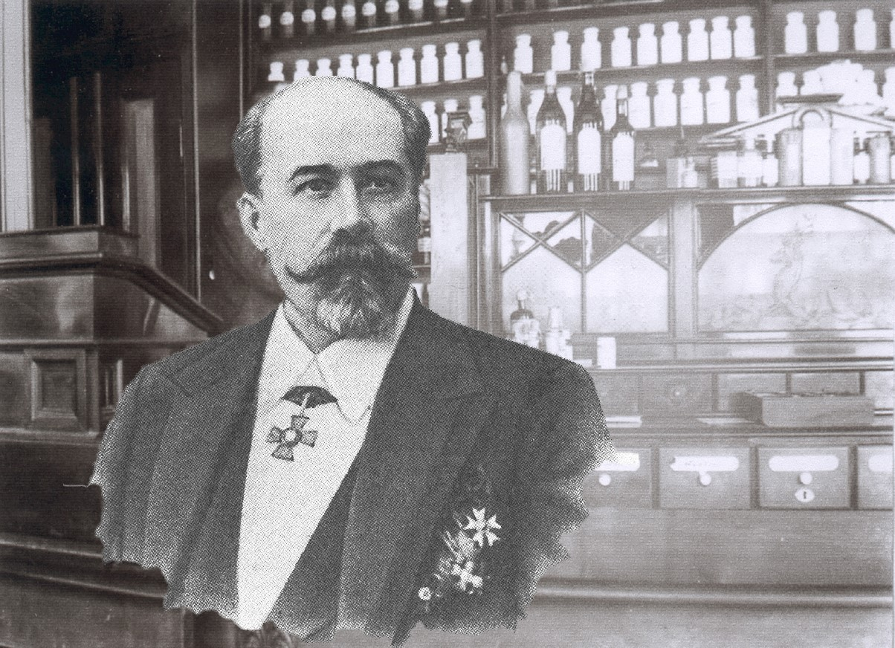
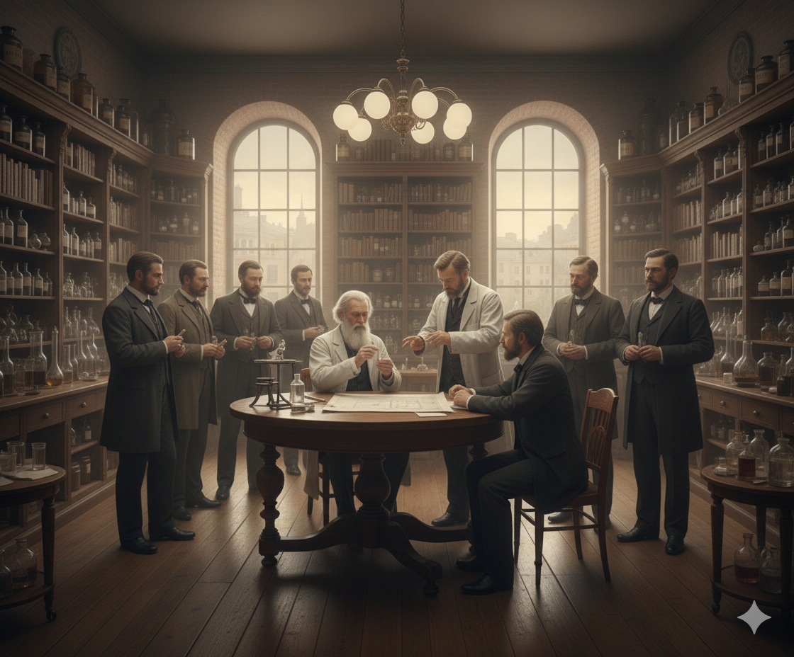
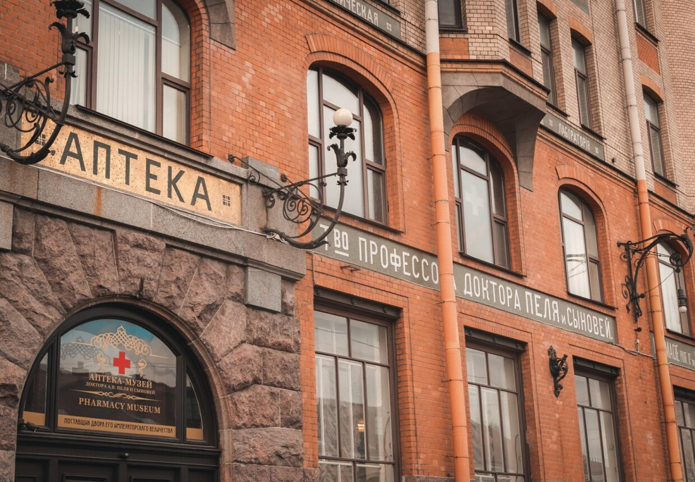

Хроники открытий
Путь Ампулы
Свитки истории
01 / 05

Башня и Грифоны
Александр Пель был не только ученым, но и хранителем тайн. Горожане верили, что в его кирпичной башне живут грифоны, охраняющие золото алхимика.

Грязная Эпоха
В XIX веке медицина была опасной. Лекарства в открытых банках быстро портились, в них попадали бактерии и пыль.
Решение Пеля
В 1885 году Пель придумал запаивать стеклянную трубку огнем. Так родилась первая в мире промышленная ампула — чистая и надежная.

Мировая слава
Аптека на 7-й линии В.О. стала научным центром империи. Сюда захаживал даже Дмитрий Менделеев.

Живая история
Сегодня здесь музей, где каждый может почувствовать себя исследователем и узнать, как химия изменила мир.